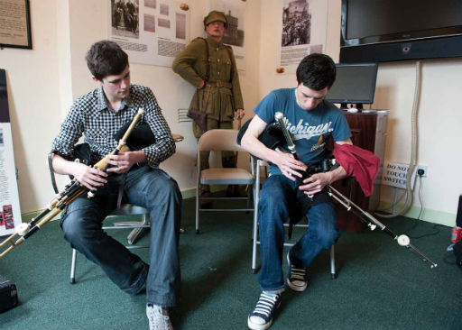

Traditional Day

TRADITIONAL DAY IN MILLMOUNT has become one of the highlights of the Irish music year with continuous performances and workshops in five venues on the site, including a non-stop concert in the Marquee in the square with this year's TG4 Gradam Ceoil award winner, ace flute-player and piper, Harry Bradley; fiddle maestro Gerry O'Connor and his band; piping legend Ronan Browne; Finnish-Irish music fusion with Danny and Akki; The Pipers from the Plain of Lu; Drogheda Comhaltas Scleip; and local super-group Kern.
Come along and see uilleann pipes being made in the Pipers' Room or strap on a set and have ago yourself! Try your hand (or foot) at whistle-playing, traditional singing, bodhran-playing, or set-dancing and seannos dancing. Listen to The Story of Irish Dance from author Helen Brennan or hear the great Scots Gaelic singer Mary Smith (Mairi Nic a' Ghobhainn) explaining the extraordinary tradition of communal Psalm Singing in the Outer Hebrides.
Sit in on a magical session of fireside song with Mary and Brian Mullen of BBC Radio Ulster. Guided tours of Drogheda Museum and Tower are free all day. A day out for all the family with street-theatre, music and fun. Have a meal in the Tower Restaurant with its stunning views of the town or visit Millmount's famous craft centre and meet the artists and browse at the Old Drogheda Society's Bookstall!
Sunday 4 May
Venue: Millmount Cultural Quarter
Times: 01:00 - 5:00pm Sun 4 May
Tickets: Free, no booking, donations of 2 welcome